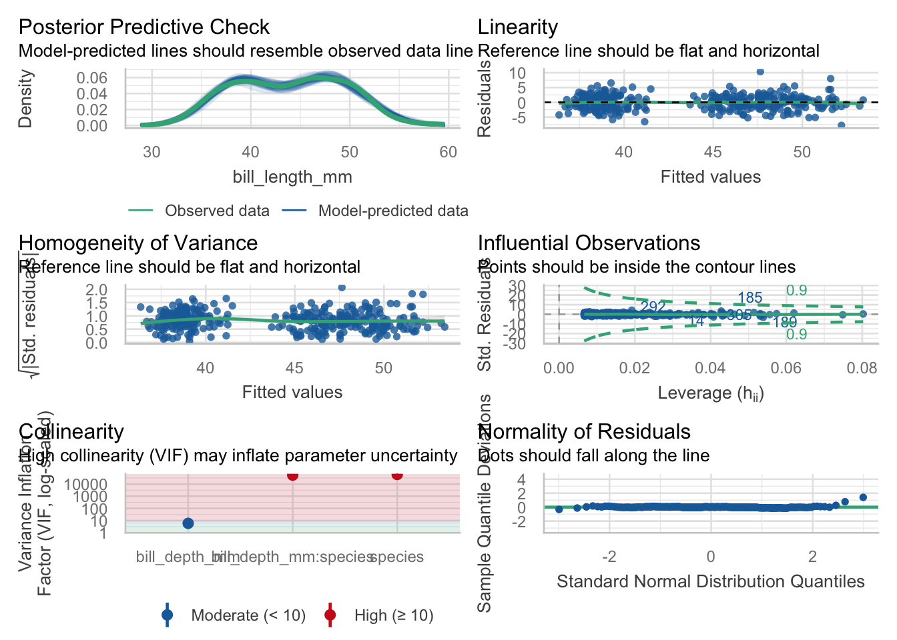

library(pandoc) # allows you to work with Word documents
install.packages(‘flextable’) # to look at model results in a nice table install.packages(‘see’) # needs to be installed, but does not need to be loaded in the library, required for performance
Intro to basic linear modeling
WARNING: This is NOT a stats class. Please make sure you understand the theory behind the statistics that you are using before you use them. Also, even though we spent the semester learning about cleaning and visualization you MUST use stats to interpret your data.
Today, I am going to show you a few cool packages that help with some modeling. There are TONS of packages and you should choose what makes the most sense to your unique type of data.
Anatomy of a basic linear model
To run a simple linear model you use the following formula:
mod<-lm(y~x, data = df)
lm = linear model, y = dependent variable, x = independent variable(s), df = dataframe
You read this as y is a function of x.
Multiple regression
mod<-lm(y~x1 + x2, data = df)
column names in dataframe
Interaction term mod<-lm(y~x1*x2, data = df)
the * will compute x1+x2+x1:x2 interaction shorthand for writing whole model out
Model the penguin dataset
We’ve tidied and visualized the data and have our set of hypotheses that we want to test. Now we can start modeling…
# Linear model of Bill depth ~ Bill length by speciesPeng_mod<-lm(bill_length_mm ~ bill_depth_mm*species, data = penguins)
Would expect to see different slopes for species.
Check model assumptions with performace
ALWAYS check the assumptions of your specific model. Make sure you know what your model is doing behind the scenes and that you meet all assumptions before interpreting your results. The {performance} package makes this super easy.
check_model(Peng_mod) # check assumptions of an lm model

You can check the assumptions in your model with the one package. Before you look at your p values
View results: base R
1. ANOVA Table.
anova(Peng_mod)
Analysis of Variance Table
Response: bill_length_mm
Df Sum Sq Mean Sq F value Pr(>F)
bill_depth_mm 1 561.6 561.6 93.965 < 2.2e-16 ***
species 2 7460.3 3730.2 624.151 < 2.2e-16 ***
bill_depth_mm:species 2 134.3 67.1 11.232 1.898e-05 ***
Residuals 336 2008.1 6.0
---
Signif. codes: 0 '***' 0.001 '**' 0.01 '*' 0.05 '.' 0.1 ' ' 1
All are statistically significant.
Anova gives us if model is significant and ?
Coefficients (effect size) with error
summary(Peng_mod)
Call:
lm(formula = bill_length_mm ~ bill_depth_mm * species, data = penguins)
Residuals:
Min 1Q Median 3Q Max
-7.7888 -1.5415 0.0575 1.5873 10.3590
Coefficients:
Estimate Std. Error t value Pr(>|t|)
(Intercept) 23.0681 3.0165 7.647 2.18e-13 ***
bill_depth_mm 0.8570 0.1641 5.224 3.08e-07 ***
speciesChinstrap -9.6402 5.7154 -1.687 0.092590 .
speciesGentoo -5.8386 4.5353 -1.287 0.198850
bill_depth_mm:speciesChinstrap 1.0651 0.3100 3.435 0.000666 ***
bill_depth_mm:speciesGentoo 1.1637 0.2789 4.172 3.84e-05 ***
---
Signif. codes: 0 '***' 0.001 '**' 0.01 '*' 0.05 '.' 0.1 ' ' 1
Residual standard error: 2.445 on 336 degrees of freedom
(2 observations deleted due to missingness)
Multiple R-squared: 0.8024, Adjusted R-squared: 0.7995
F-statistic: 272.9 on 5 and 336 DF, p-value: < 2.2e-16
If your effect is different from 0 or your intercept or not.
Summary gives effect size.
Compares everything to intercept (base) and is in alphabetical order.
Standard error for each of your effect size as well.
View results with broom These results are not in a clean form and it is hard to extract specific values. Using {broom} we can “tidy” the results so that it is easier to view and extract. Functions tidy(), glance(), and augment() will clean up your results
tidy makes it easier view and extract.
# Tidy coefficientscoeffs<-tidy(Peng_mod) # just put tidy() around itcoeffs
Tidy up coefficients and summary.
Hard to extract the p-values but not anymore.
tidy() gives us summary data in clean format. Gives us coefficients of the model.
Results in {modelsummary}
{modelsummary} creates tables and plots to summarize statistical models and data in R.
Makes publishing easier for tweaking in Word or Illustrator later.
modelsummary includes two families of functions:
Model Summary
modelsummary: Regression tables with side-by-side models.
modelsummary_wide: Regression tables for categorical response models or grouped coefficients.
modelplot: Coefficient plots.
Data Summary datasummary: Powerful tool to create (multi-level) cross-tabs and data summaries.
datasummary_balance: Balance tables with subgroup statistics and difference in means (aka “Table 1”).
datasummary_correlation: Correlation tables.
datasummary_skim: Quick overview (“skim”) of a dataset.
datasummary_df: Turn dataframes into nice tables with titles, notes, etc.
Export summary tables to word, markdown, or tex document. You can also modify the tables to make them pub quality.
Let’s compare the Peng_mod with one that does not have species as an interaction term.
# New modelPeng_mod_noX<-lm(bill_length_mm ~ bill_depth_mm, data = penguins)#Make a list of models and name themmodels<-list("Model with interaction"= Peng_mod,"Model with no interaction"= Peng_mod_noX)#Save the results as a .docxmodelsummary(models, output =here("Week_13","Output","table.docx")) # uses pandoc package
Many models with purrr, dplyr, and broom. Combine what we just learned…
Let’s say you want to plot and compare lots of different models at the same time and view the results. For example, instead of using species as an interaction term, let’s make an individual model for every species.
We can essentially make a set of lists that have each dataset that we want to model and use the map functions to run the same model to every dataset. We will test it step by step.
First, let’s call the penguin data and create a list for the data by each species. We do this using nest(). We are going to nest the data by species.
models<-penguins %>%ungroup() %>%# the penguin data are grouped so we need to ungroup themnest(.by = species) # nest all the data by speciesmodels
# A tibble: 3 × 2
species data
<fct> <list>
1 Adelie <tibble [152 × 6]>
2 Gentoo <tibble [124 × 6]>
3 Chinstrap <tibble [68 × 6]>
The penguin package has everything grouped for some reasons so we have to ungroup it but in own dataset we prob dont have to do that part.
map a model to each of the groups in the list
models<- penguins %>%ungroup()%>%# the penguin data are grouped so we need to ungroup themnest(.by = species) %>%# nest all the data by species mutate(fit =map(data, ~lm(bill_length_mm~body_mass_g, data = .))) # the . is the dataframe for this speciesmodels
# A tibble: 3 × 3
species data fit
<fct> <list> <list>
1 Adelie <tibble [152 × 6]> <lm>
2 Gentoo <tibble [124 × 6]> <lm>
3 Chinstrap <tibble [68 × 6]> <lm>
This makes it Easier to deal with more species or biogeochemical paramters. Gives us formula for all models.
View the results. First, let’s mutate the models list so that we have a tidy coefficient dataframe (using tidy()) and a tidy model results dataframe (using glance())
results<-models %>%mutate(coeffs =map(fit, tidy), # look at the coefficientsmodelresults =map(fit, glance)) # R2 and othersresults
Extracting coefficients from fit.
created new columns for fit, coefficients, and model results.
Now we are going to look at them…
Next, select what we want to show and unnest it to bring it back to a dataframe
results<-models %>%mutate(coeffs =map(fit, tidy), # look at the coefficientsmodelresults =map(fit, glance)) %>%# R2 and others select(species, coeffs, modelresults) %>%# only keep the resultsunnest() # put it back in a dataframe and specify which columns to unnest
Warning: `cols` is now required when using `unnest()`.
ℹ Please use `cols = c(coeffs, modelresults)`.
view(results) # view the results
Can go from reading in data to getting all the values you care about in dataframe just using pipes.
Other very common stats packages
stats: General (lm)and generalized (glm) linear models (already loaded with base R)
lmer : mixed effects models
lmerTest’ : getting results from lmer
nlme : non-linear mixed effects models
mgcv, gam : generalized additive models
brms, rstan, and many more : Bayesian modeling
lavaan, peicewiseSEM : Structural Equation Models
rpart, randomForest, xgboost, and more : Machine learning models
And so many more!
{Tidymodels} Like almost everything else there is a modeling package that uses the tidyverse language to create models. It is called {tidymodels}. For full transparency, I have not used it, but it looks cool and seems particularly useful for machine learning style modeling.
In tidymodels you start by specifying the functional form using the parsnip package. In our case, we will use a linear regression which is coded like this:
linear_reg()
Linear Regression Model Specification (regression)
Computational engine: lm
Next, we need to set the engine for what type of linear regression we are modeling. For example, we could use an OLS regression or Bayesian or several other options. We will stick with OLS.
lm_mod<-linear_reg() %>%set_engine("lm")lm_mod
Linear Regression Model Specification (regression)
Computational engine: lm
Next, we add the model fit.
lm_mod<-linear_reg() %>%set_engine("lm") %>%fit(bill_length_mm ~ bill_depth_mm*species, data = penguins)lm_mod
Homework
You have a set of 4 .csv files in data/homework. Each of these files is a timeseries of temperature and light data collected in tide pools in Oregon by Jenn Fields. Your goal is to bring in all 4 files and calculate the mean and standard deviation of both temperature (Temp.C) and light (Intensity.lux) for each tide pool. Use both a for loop and map() functions in your script. (Basically, do it twice). Due Tuesday at 1pm.
Data Dictionary
Variable Name Description PoolID ID of the pool Foundation_spp Surfgrass or mussel dominated pool Removal_Control Was it a removal or control treatment Date.Time Date and time Temp.C Temperature in degrees C Intensity.lux Light level in lux LoggerDepth Depth of the logger in meters
Total awesome R package.
{pushoverr}: Send push notifications to your phone from R! Does your code take forever to run and you want to go on a run yourself? Have it send your phone or smartwatch a push notification when it’s done!
You will have to follow the directions on the website to download the app to your phone… but, basically with one line of code you can do this!
install.packages(“pushoverr”) library(pushoverr) pushover(“Nyssa - your code is done.”)
pushover(“Nyssa - the cats are awake and they are angry!!”)